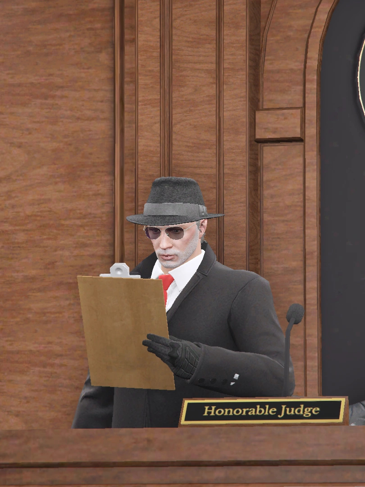

نخبة من الكفاءات القضائية التي تعمل على ترسيخ العدالة وحفظ الحقوق داخل مدينة أولد سكول.

منذ تأسيس أولد سكول في مرحلتها الثانية، تولّى قيادة المنظومة القضائية والإشراف على تطوير الأنظمة واللوائح القضائية وترسيخ مبادئ العدالة والنزاهة والاستقلال القضائي.
يعمل على دراسة القضايا والنظر في النزاعات وإصدار الأحكام وفق الأنظمة القضائية المعتمدة.
يتولى تمثيل الحق العام ومباشرة القضايا الجنائية والتحقيق في المخالفات والجرائم.
يساهم في متابعة التحقيقات والقضايا والعمل على تطبيق الأنظمة القضائية بكل نزاهة وعدالة.
يمثل المواطنين أمام الجهات القضائية ويقدم الاستشارات القانونية والدفاع عن الحقوق.